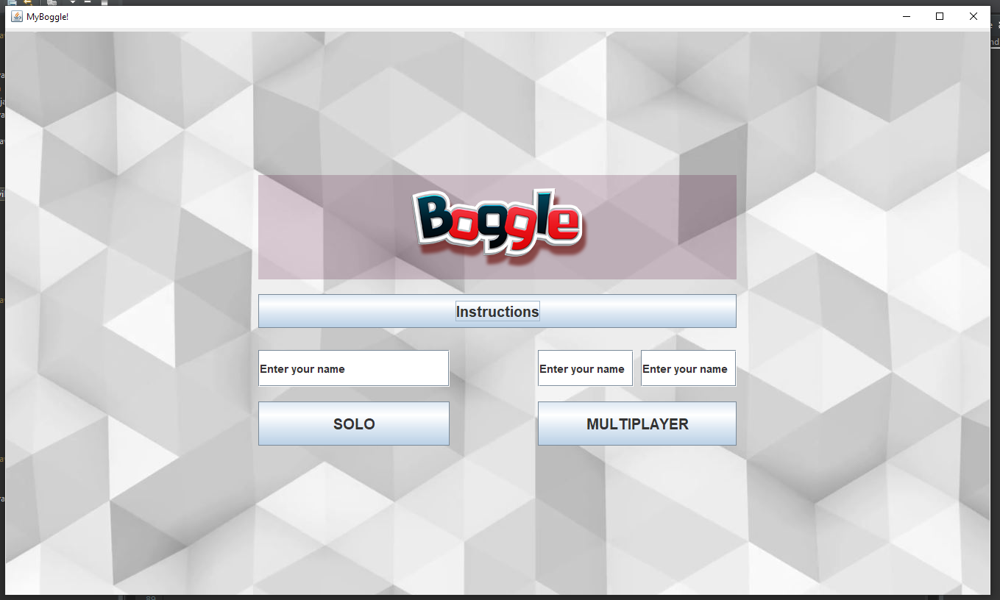
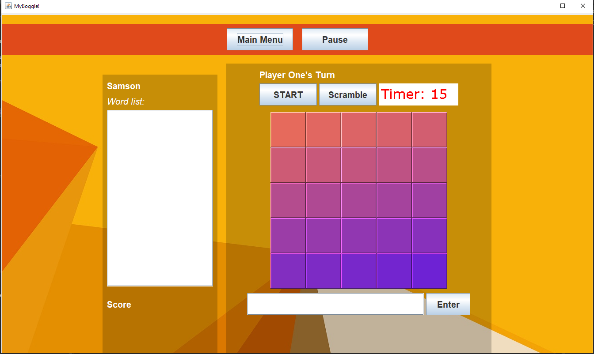
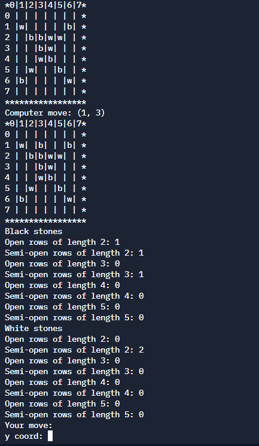
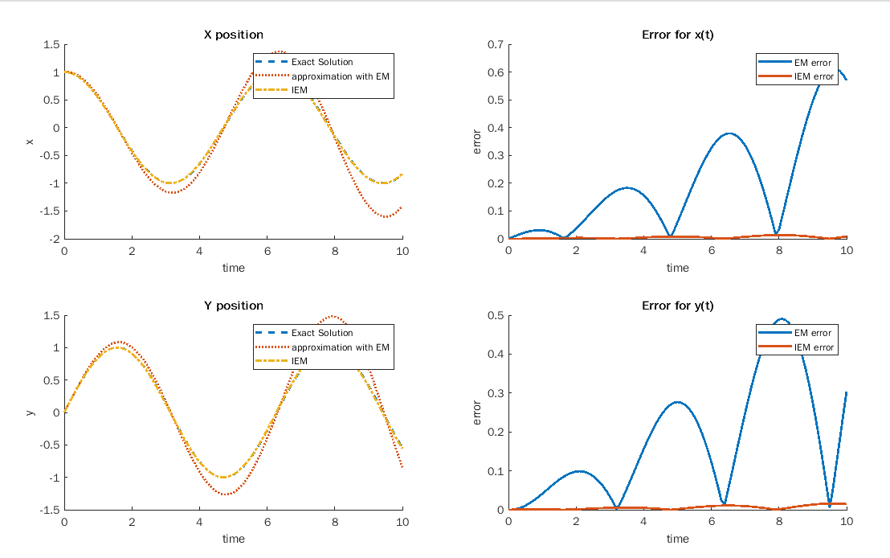
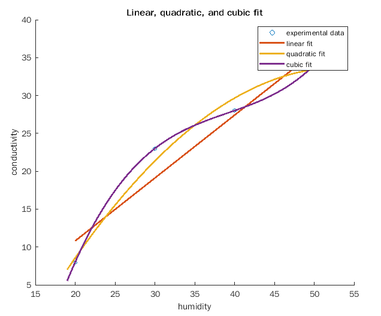
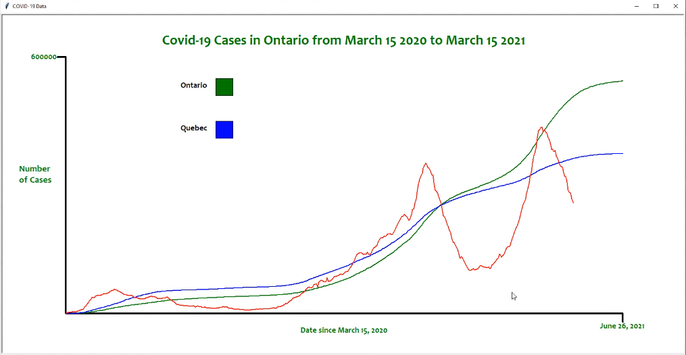
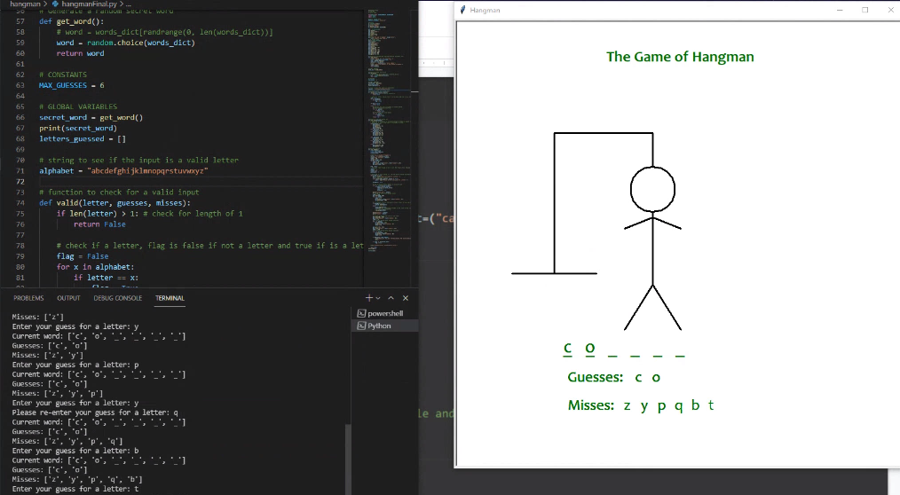

Coding
He is experienced in Java, and some experience with Python having taken competitive Java classes for around 5 years. Also has knowledge of html and css. You can check out my completed problems on: dmoj.ca/user/SamsonW
Achievements
CCC Junior earned certificate of distinction (top 25%)
CCC Senior earned certificate of distinction (top 25%)
Projects
BoggleThe classic boggle game where you find words in a 5x5 grid of letters. This game was made in my grade 11 year with a group, coded in Java. It has a GUI and is playable with 1 or 2 players.   |
GomokuGomoku is a Japanese board game where 2 players play with a set of black and white stones to form a sequence of 5 stones in a row. The program is text-based and has a computer "AI" which analyzes the board for the best move based on semi-open and open sequences.  |
MatLab GraphingI am experienced with MatLab after working on assignments in university using the software.
Here are two examples:   |
Graphing Covid Cases using PythonAs a case study of covid cases, I extracted detailed data and graphed it, comparing Ontario and Quebec. The blue and green lines are the 7-day averages and the red line is the daily cases.  |
Hangman game made with PythonThe classic hangman game that recieves text-based input and outputs the ongoing game on a GUI.  |